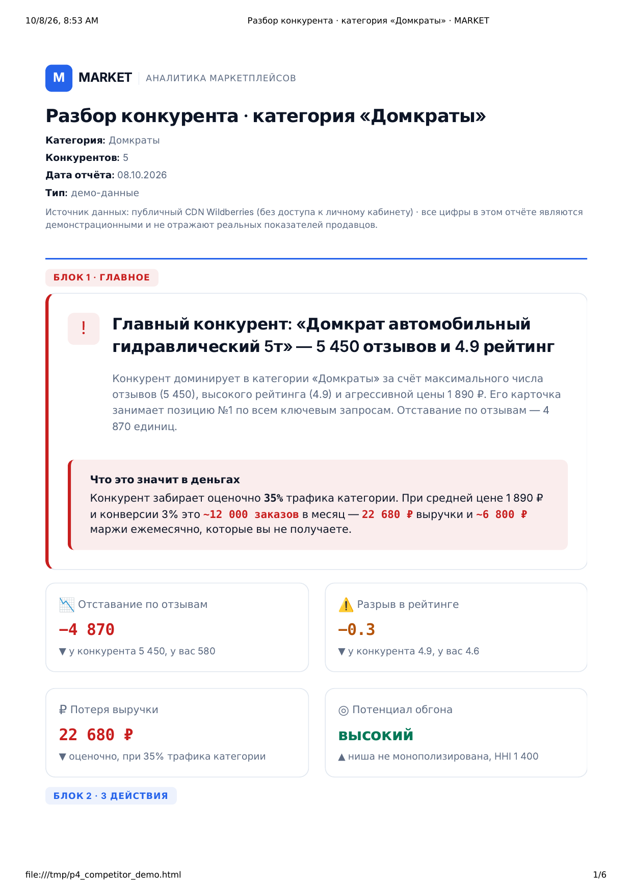
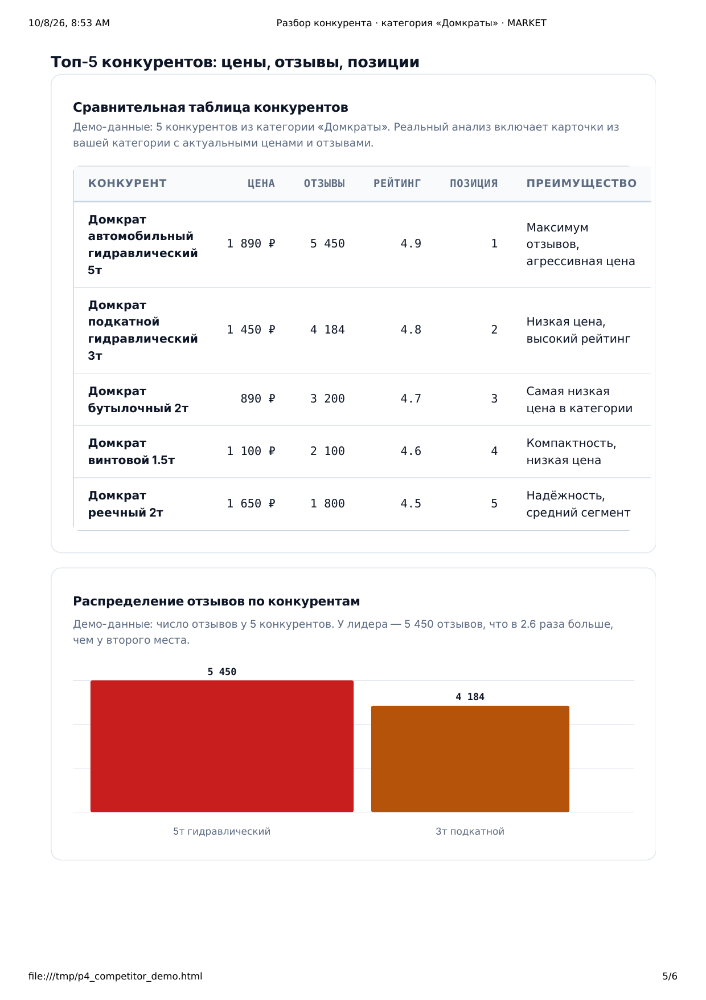

Разбор конкурента Wildberries
Что делают топ-5 конкурентов и почему они продают
Разбираю до пяти конкурентов категории: цена и её история, фото и rich-контент, отзывы и системные дефекты, семантика, позиции и стратегия. Вывод — на чём он зарабатывает и где его можно обойти без демпинга. Отчёт за один рабочий день.
Оплата после того, как отчёт готов. Предоплата не нужна.
Что получите
пять блоков отчёта, каждый отвечает на свой вопрос-
ГЛАВНОЕ — почему конкурент продаёт
Одна причина, из-за которой конкурент впереди: цена, карточка, отзывы или позиции. Не список из десяти наблюдений, а то, что решает исход. Рядом четыре KPI: его продажи в месяц, средняя цена, рейтинг, число отзывов.
Пример: «Продаёт в 3 раза больше при цене +12 %: 4 200 отзывов против ваших 90 — покупатель берёт по инерции рейтинга»
-
3 ДЕЙСТВИЯ — что забрать у конкурента
Три задачи по приоритету: что именно повторить или сделать лучше, ожидаемый эффект в показы и заказы, срок. Не «улучшить карточку», а «переписать первый кадр под его возражение, у него 4 слайда из 7 не несут пользы».
Пример: «1. Закрыть возражение по комплектации в первом кадре — у конкурента оно не закрыто, +15 % конверсии, срок 1 день»
-
ПОЧЕМУ МЫ — откуда цифры
Источник данных и проверки качества, чтобы вы могли оценить, насколько цифрам можно верить. Не «мы посмотрели», а схема: откуда взяты данные, сколько карточек разобрано, какая формула применена.
Пример: «Публичный CDN Wildberries, 5 карточек конкурентов, позиции сверены по поисковой выдаче на дату разбора»
-
СТРАХ ПОТЕРИ — что будет, если не смотреть
Сколько показов и заказов вы отдаёте конкуренту прямо сейчас и как разрыв растёт: отзывы копятся, позиции укрепляются, покупатель привыкает. Чем позже вы начинаете отыгрывать, тем дороже это стоит.
Пример: «+1 отзыв в день у конкурента: за год разрыв в рейтинге станет непреодолимым без бюджета на рекламу»
-
ДЕТАЛИ — таблица по каждому конкуренту
Всё, что подтверждает выводы: по каждому из пяти конкурентов — цена и её история, характеристики и rich-контент, вес и склад, рейтинг и распределение по звёздам, доля отзывов 1–3★, топ системных дефектов из отзывов и позиции в поиске.
Пример: «Конкурент №1: цена 1 490 ₽, рейтинг 4,7, 18 % отзывов 1–3★, главный дефект — „не соответствует комплектации“, позиция 3»
Как работает
три шага, без встреч и созвонов-
Заявка
Присылаете ссылку на свою карточку и на 3–5 конкурентов. Нет списка — назовите категорию, найду лидеров по позициям в поиске. Ключи и доступы не нужны.
-
Разбор
По каждому конкуренту: цена и история, фото и rich-контент, характеристики, отзывы и дефекты, семантика и позиции. Свожу в таблицу и ищу, где его можно обойти.
-
Отчёт
Получаете отчёт из 5 блоков в PDF и в интерактивном HTML: смотрите, задаёте вопросы, платите после. Если разбор не получился по моей причине — оплата не берётся.
Пример отчёта
два фрагмента из демо-отчётаНиже — фрагменты демонстрационного отчёта по категории «Домкраты». Цифры в примере — расчёт по демо-данным, а не по вашей карточке.


Частые вопросы
семь вопросов, которые задают до заказаЧто нужно от меня?
Ссылка на вашу карточку и на 3–5 карточек конкурентов (или категория, и я найду лидеров сам). Если есть — укажите задачу: догнать по трафику, по продажам или выйти из своего сегмента.
Нужен ли API-ключ Wildberries?
Нет. Разбор строится на публичном CDN Wildberries — витрине, которую видит покупатель: карточка, характеристики, фото, отзывы, позиции. Ключ Seller API и доступ в личный кабинет не нужны.
Сколько времени занимает разбор?
Один рабочий день с момента получения ссылок. Все данные публичные, ждать выгрузок из личного кабинета не нужно.
Сколько конкурентов вы разбираете?
До пяти. Если у вас уже есть список — беру его; если нет, нахожу лидеров категории по позициям в поиске. Один заказ — одна категория, для нескольких нужны отдельные заказы.
Что если отчёт не подойдёт?
Оплата после того, как отчёт готов: сначала вы его смотрите, потом платите. Предоплата не нужна. Если разбор не получился по моей причине — данных не хватило или карточка не разобралась, — оплата не берётся.
Работаете с начинающими?
Да. Разбор помогает и на старте: видно, что нужно повторить у лидеров категории и где у них слабые места, на которых можно отыграть без бюджета на рекламу.
Что НЕ входит в разбор?
Правки в вашу карточку — только рекомендации. Юнит-экономика ваших SKU (это P7) и анализ ниши целиком (P10) — отдельные услуги. Копирование карточек конкурентов не делаю: разбираю, почему они работают, а не копирую их.
Пришлите ссылки на карточки
Отвечаю письменно, звонков нет. Достаточно ссылок на вашу карточку и конкурентов — остальное найду сам. Отчёт будет завтра.